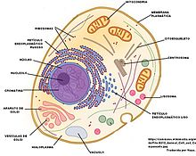

La célula (del latín cellula, diminutivo de cella, ‘celda’)1 es la unidad morfológica y funcional de todo ser vivo. De hecho, la célula es el elemento de menor tamaño que puede considerarse vivo.2 De este modo, puede clasificarse a los organismos vivos según el número de células que posean: si solo tienen una, se les denomina unicelulares (como pueden ser los protozoos o las bacterias, organismos microscópicos); si poseen más, se les llama pluricelulares. En estos últimos el número de células es variable: de unos pocos cientos, como en algunos nematodos, a cientos de billones (1014), como en el caso del ser humano. Las células suelen poseer un tamaño de 10 µm y una masa de 1 ng, si bien existen células mucho mayores.
La teoría celular, propuesta en 1838 para los vegetales y en 1839 para los animales,3 por Matthias Jakob Schleiden y Theodor Schwann, postula que todos los organismos están compuestos por células, y que todas las células derivan de otras precedentes. De este modo, todas las funciones vitales emanan de la maquinaria celular y de la interacción entre células adyacentes; además, la tenencia de la información genética, base de la herencia, en su ADN permite la transmisión de aquella de generación en generación.4
La historia de la biología celular ha estado ligada al desarrollo tecnológico que pudiera sustentar su estudio. De este modo, el primer acercamiento a su morfología se inicia con la popularización del microscopio rudimentario de lentes compuestas en el siglo xvii, se suplementa con diversas técnicas histológicas para microscopía óptica en los siglos XIX y XX y alcanza un mayor nivel resolutivo mediante los estudios de microscopía electrónica, de fluorescencia y confocal, entre otros, ya en el siglo xx. El desarrollo de herramientas moleculares, basadas en el manejo de ácidos nucleicos y enzimas permitieron un análisis más exhaustivo a lo largo del siglo xx.8
El tamaño y la forma de las células depende de sus elementos más periféricos (por ejemplo, la pared, si la hubiere) y de su andamiaje interno (es decir, el citoesqueleto). Además, la competencia por el espacio tisular provoca una morfología característica: por ejemplo, las células vegetales, poliédricas in vivo, tienden a ser esféricas in vitro.20 Incluso pueden existir parámetros químicos sencillos, como los gradientes de concentración de una sal, que determinen la aparición de una forma compleja.
| Caracteristica compartiva | Procariota | Eucariota |
|---|---|---|
| Estructura | Simple, sin núcleo celular diferenciado es decir su ADN esta disperso en el citoplasma. |
Más compleja, tiene su material hereditario fundamental encerrado en una envoltura nuclear. |
| Numero de Células | Son unicelulares, es decir poseen una sola célula. |
Son en su mayoría pluricelulares, es decir poseen más de una célula. |
| Origen | Data de 3500 millones de años. Creyéndose que fueron las primeras celulas vivas |
Hace 1500 millones de años. Se origino de los cambios que realizó la célula procariota |
| Caracteristicas Secundarias |
|
|